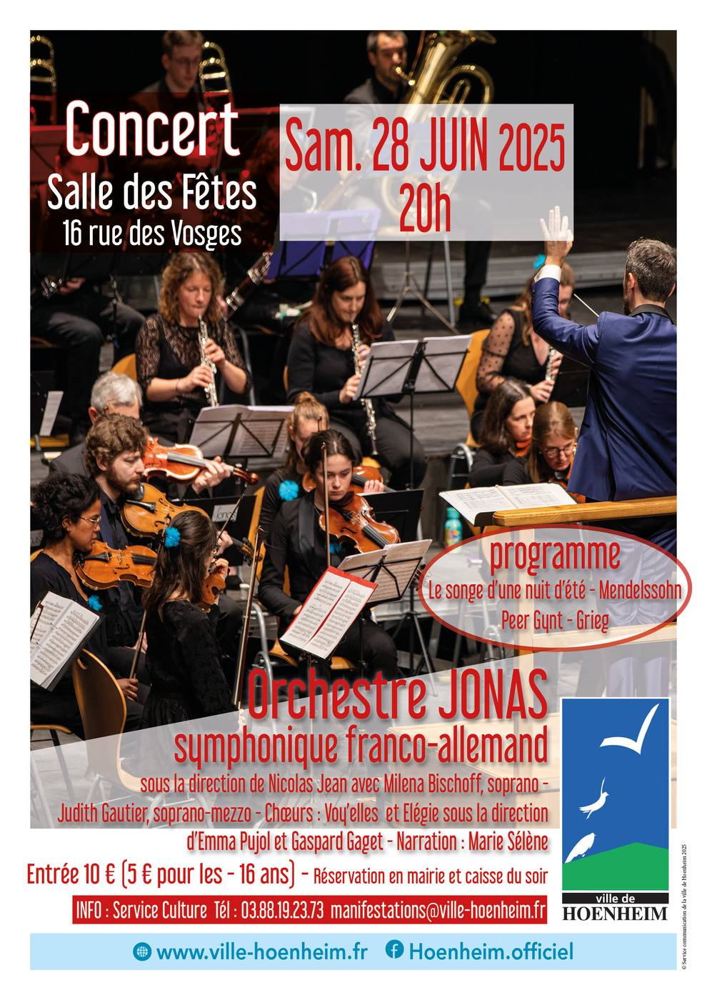

- Cet événement est terminé
Concert de l’Orchestre JONAS
28 juin 2025 à 20 h 00 min - 22 h 00 min
Navigation de l'événement

Dans le cadre des rendez-vous musique et culture la ville de Hoenheim vous propose un concert de l’Orchestre JONAS le samedi 28 juin à 20h00 à la salle des fêtes 16 rue des Vosges à Hoenheim.
L’orchestre Jonas vous invite à entrer dans un été de rêve ! Pour entrer dans la saison estivale, l’ensemble symphonique franco-allemand vous propose un programme musical autour du « Songe d’une nuit d’été » de Mendelssohn et de « Peer Gynt » de Grieg. Accompagné de deux chanteuses lyriques mais aussi de deux chœurs et d’une narratrice, l’orchestre saura vous plonger dans les univers fantastiques et mystérieux de ces oeuvres incontournables.
L’orchestre franco-allemand Jonas est un ensemble amateur composé d’une soixantaine de musiciens âgés de 15 à 65 ans. Sous la direction de leur chef Nicolas Jean, c’est en seulement 5 à 6 répétitions qu’ils montent leur projet semestriel. Depuis bientôt 10 ans, cet orchestre à l’identité atypique a pour objectif de partager sa passion en France et outre-Rhin. Porté par la complicité et l’enthousiasme contagieux de ses musiciens, Jonas ouvre les portes de la musique symphonique au plus grand nombre, offrant un moment d’émotion unique à ses auditeurs.
L’entrée est à 10 € et 5 € pour les moins de 16 ans
La prévente des billets se fait à la Mairie de Hoenheim auprès du Service Animation 03 88 19 23 73 ou manifestations@ville-hoenheim.fr.
Une caisse du soir sera également ouverte dès 19H30, dans la limite des places disponibles